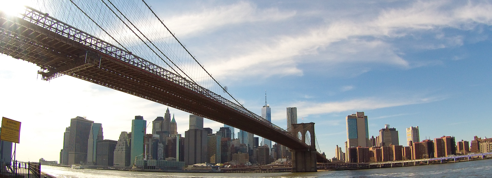

Notre premier gros voyage : New-York !
C'était il y a 14 ans, la premiere fois que nous partions aussi loin ! Mais nous y sommes retourné depuis, à l'occasion de notre road trip dans l'Est Américain, aussi je préfère vous parler de notre deuxième séjour, les informations, photos ou conseils seront plus pértinant.
- Jour par jour -
Jour 1
Arrivé à Manhattan, notre hôtel citizenM hôtel était juste à coté de Times Square (Google Maps), idéal pour un séjour dans la grosse pomme, car central et proche des transports.


Jour 2
1er petit déjeuner à New York avant une grosse journée !
- ChinaTown
- Une ville dans la ville
- Upper West Side
- Les beaux Quartiers de Manhattan
- Upper East Side
- L'autrer côté des beaux Quartiers
- Chelsea
- Greenwich Village
- Soho(Plan)
- Tribeca
- Central Park
- East Village
- Little Italy
- Financial District
Quelques vidéos pour vous mettre dans l'ambiance.
Google Maps
Music
Jay-Z feat. Alicia Keys - Empire State of Mind
Important !
- Avant de partir
- Langue
- Monnaie
- Ministère de l’Europe et des Affaires étrangères
4101 Reservoir Road, N.W. 20007 Washington D.C.
Tel : (+1) 202 944 60 00
Courriel : info@ambafrance-us.org
Site Web : https://fr.franceintheus.org/
- Consulat général de France à New York
934 Fifth Avenue, New-York
Tel : (+1) 332-217-2032
Courriel : chancellerie@consulfrance-newyork.org
Site Web : https://newyork.consulfrance.org/
- Ambassade de France aux États-Unis
4101 Reservoir Road, N.W. 20007 Washington D.C.
Tel : (+1) 202 944 60 00
Courriel : chancellerie@consulfrance-newyork.org
Site Web : https://newyork.consulfrance.org/